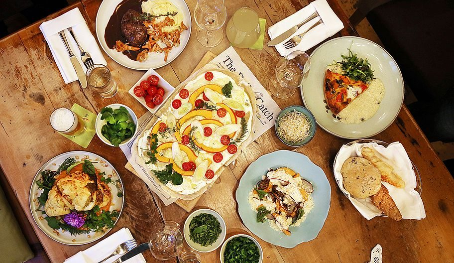

Genussfrühstücksbuffet
Saftiger Schinken, heimischer Käse vom Brett, Babenbergermüsli, hausgemachter Obstsalat, Kuchen, Bio-Säfte, Bio-Tees und mehr.
€ 21,50 pro Person
Unverbindliche Gestaltungs-Vorschau · keine offizielle Website des Hotel & Restaurant Babenbergerhof · erstellt von AVOS Solutions
Frisch, knackig, klassisch und manchmal überraschend außergewöhnlich: Genussfrühstück, Mittagstisch in zwei Gängen, à la carte am Abend — und eine Weinkarte, die Österreich von der Thermenregion bis in die Südsteiermark abbildet.
Am Samstag ist das Restaurant ab 14.00 Uhr geschlossen, die Rezeption ist bis 14.00 Uhr besetzt. An Sonn- und Feiertagen sind Restaurant und Rezeption ab 14.00 Uhr geschlossen.
Um Tischreservierung wird gebeten: telefonisch unter +43 2236 22246 oder per E-Mail an hotel@babenbergerhof.com — oder gleich online im Formular.
Für süße, salzige, saure, gesunde, vegetarische, deftige, anspruchsvolle und hungrige Genießerinnen und Genießer.
Saftiger Schinken, heimischer Käse vom Brett, Babenbergermüsli, hausgemachter Obstsalat, Kuchen, Bio-Säfte, Bio-Tees und mehr.
€ 21,50 pro Person
Noch mehr vom Feinsten — mit Räucherlachs, Serranoschinken, Croissants und Prosecco.
€ 37,50 pro Person
Für Hotelgäste ist das Genussfrühstück im Zimmerpreis enthalten.
Traditionelles mit Raffinesse und Regionales mit viel Liebe und Kreativität — wir leben Kochen. Von Montag bis Freitag von 11.45 bis 14.30 Uhr, abends von 18 bis 21 Uhr à la carte.
€ 19,50
Ab Mitte September ergänzen Wildspezialitäten die Karte.

Das Herz des Hauses: österreichische Küche, ca. 40 Plätze, auf Wunsch als Extraraum für Ihre Feier buchbar.
Kaffee, Kuchen und Drinks für den Genuss zwischendurch — mitten in der Fußgängerzone.
Ruhiger Platz im Grünen, gleich hinter dem Haus.
Draußen sitzen, mitten im Stadtleben von Mödling.
Alle Preise pro Flasche. Die Karte wird laufend gepflegt; einzelne Jahrgänge können wechseln. Fragen Sie uns gerne nach offenen Weinen und Empfehlungen zu Ihrem Menü.
Reservieren Sie online — wir bestätigen Ihre Anfrage persönlich.